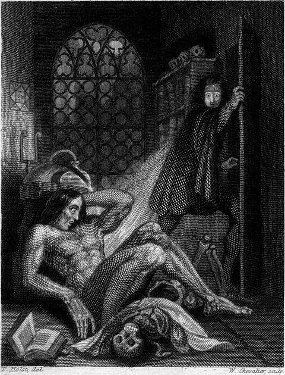

Mary Wollstonecraft Shelley
Frankenstein, or the Modern Prometheus
Revised Edition, 1831
Fabrique
Sommaire
Introduction
The Publishers of the Standard Novels, in selecting “Frankenstein” for one of their series, expressed a wish that I should furnish them with some account of the origin of the story. I am the more willing to comply, because I shall thus give a general answer to the question, so very frequently asked me—“How I, then a young girl, came to think of, and to dilate upon, so very hideous an idea?" It is true that I am very averse to bringing myself forward in print; but as my account will only appear as an appendage to a former production, and as it will be confined to such topics as have connection with my authorship alone, I can scarcely accuse myself of a personal intrusion.
It is not singular that, as the daughter of two persons of distinguished literary celebrity, I should very early in life have thought of writing. As a child I scribbled; and my favourite pastime, during the hours given me for recreation, was to “write stories.” Still I had a dearer pleasure than this, which was the formation of castles in the air—the indulging in waking dreams—the following up trains of thought, which had for their subject the formation of a succession of imaginary incidents. My dreams were at once more fantastic and agreeable than my writings. In the latter I was a close imitator—rather doing as others had done, than putting down the suggestions of my own mind. What I wrote was intended at least for one other eye—my Childhood’s companion and friend; but my dreams were all my own; I accounted for them to nobody; they were my refuge when annoyed—my dearest pleasure when free.
I lived principally in the country as a girl, and passed a considerable time in Scotland. I made occasional visits to the more picturesque parts; but my habitual residence was on the blank and dreary northern shores of the Tay, near Dundee. Blank and dreary on retrospection I call them; they were not so to me then. They were the eyry of freedom, and the pleasant region where unheeded I could commune with the creatures of my fancy. I wrote then—but in a most common-place style. It was beneath the trees of the grounds belonging to our house, or on the bleak sides of the woodless mountains near, that my true compositions, the airy flights of my imagination, were born and fostered. I did not make myself the heroine of my tales. Life appeared to me too common-place an affair as regarded myself. I could not figure to myself that romantic woes or wonderful events would ever be my lot; but I was not confined to my own identity, and I could people the hours with creations far more interesting to me at that age, than my own sensations.
After this my life became busier, and reality stood in place of fiction. My husband, however, was from the first, very anxious that I should prove myself worthy of my parentage, and enrol myself on the page of fame. He was for ever inciting me to obtain literary reputation, which even on my own part I cared for then, though since I have become infinitely indifferent to it. At this time he desired that I should write, not so much with the idea that I could produce any thing worthy of notice, but that he might himself judge how far I possessed the promise of better things hereafter. Still I did nothing. Travelling, and the cares of a family, occupied my time; and study, in the way of reading, or improving my ideas in communication with his far more cultivated mind, was all of literary employment that engaged my attention.
In the summer of 1816, we visited Switzerland, and became the neighbours of Lord Byron. At first we spent our pleasant hours on the lake, or wandering on its shores; and Lord Byron, who was writing the third canto of Childe Harold, was the only one among us who put his thoughts upon paper. These, as he brought them successively to us, clothed in all the light and harmony of poetry, seemed to stamp as divine the glories of heaven and earth, whose influences we partook with him.
But it proved a wet, ungenial summer, and incessant rain often confined us for days to the house. Some volumes of ghost stories, translated from the German into French, fell into our hands. There was the History of the Inconstant Lover, who, when he thought to clasp the bride to whom he had pledged his vows, found himself in the arms of the pale ghost of her whom he had deserted. There was the tale of the sinful founder of his race, whose miserable doom it was to bestow the kiss of death on all the younger sons of his fated house, just when they reached the age of promise. His gigantic, shadowy form, clothed like the ghost in Hamlet, in complete armour, but with the beaver up, was seen at midnight, by the moon’s fitful beams, to advance slowly along the gloomy avenue. The shape was lost beneath the shadow of the castle walls; but soon a gate swung back, a step was heard, the door of the chamber opened, and he advanced to the couch of the blooming youths, cradled in healthy sleep. Eternal sorrow sat upon his face as he bent down and kissed the forehead of the boys, who from that hour withered like flowers snapt upon the stalk. I have not seen these stories since then; but their incidents are as fresh in my mind as if I had read them yesterday.
“We will each write a ghost story,” said Lord Byron; and his proposition was acceded to. There were four of us. The noble author began a tale, a fragment of which he printed at the end of his poem of Mazeppa. Shelley, more apt to embody ideas and sentiments in the radiance of brilliant imagery, and in the music of the most melodious verse that adorns our language, than to invent the machinery of a story, commenced one founded on the experiences of his early life. Poor Palidori had some terrible idea about a skull-headed lady, who was so punished for peeping through a key-hole—what to see I forget—something very shocking and wrong of course; but when she was reduced to a worse condition than the renowned Tom of Coventry, he did not know what to do with her, and was obliged to despatch her to the tomb of the Capulets, the only place for which she was fitted. The illustrious poets also, annoyed by the platitude of prose, speedily relinquished their uncongenial task.
I busied myself to think of a story,—a story to rival those which had excited us to this task. One which would speak to the mysterious fears of our nature, and awaken thrilling horror—one to make the reader dread to look round, to curdle the blood, and quicken the beatings of the heart. If I did not accomplish these things, my ghost story would be unworthy of its name. I thought and pondered—vainly. I felt that blank incapability of invention which is the greatest misery of authorship, when dull Nothing replies to our anxious invocations. Have you thought of a story? I was asked each morning, and each morning I was forced to reply with a mortifying negative.
Every thing must have a beginning, to speak in Sanchean phrase; and that beginning must be linked to something that went before. The Hindoos give the world an elephant to support it, but they make the elephant stand upon a tortoise. Invention, it must be humbly admitted, does not consist in creating out of void, but out of chaos; the materials must, in the first place, be afforded: it can give form to dark, shapeless substances, but cannot bring into being the substance itself. In all matters of discovery and invention, even of those that appertain to the imagination, we are continually reminded of the story of Columbus and his egg. Invention consists in the capacity of seizing on the capabilities of a subject, and in the power of moulding and fashioning ideas suggested to it.
Many and long were the conversations between Lord Byron and Shelley, to which I was a devout but nearly silent listener. During one of these, various philosophical doctrines were discussed, and among others the nature of the principle of life, and whether there was any probability of its ever being discovered and communicated. They talked of the experiments of Dr. Darwin, (I speak not of what the Doctor really did, or said that he did, but, as more to my purpose, of what was then spoken of as having been done by him,) who preserved a piece of vermicelli in a glass case, till by some extraordinary means it began to move with voluntary motion. Not thus, after all, would life be given. Perhaps a corpse would be re-animated; galvanism had given token of such things: perhaps the component parts of a creature might be manufactured, brought together, and endued with vital warmth.
Night waned upon this talk, and even the witching hour had gone by, before we retired to rest. When I placed my head on my pillow, I did not sleep, nor could I be said to think. My imagination, unbidden, possessed and guided me, gifting the successive images that arose in my mind with a vividness far beyond the usual bounds of reverie. I saw—with shut eyes, but acute mental vision,—I saw the pale student of unhallowed arts kneeling beside the thing he had put together. I saw the hideous phantasm of a man stretched out, and then, on the working of some powerful engine, show signs of life, and stir with an uneasy, half vital motion. Frightful must it be; for supremely frightful would be the effect of any human endeavour to mock the stupendous mechanism of the Creator of the world. His success would terrify the artist; he would rush away from his odious handywork, horror-stricken. He would hope that, left to itself, the slight spark of life which he had communicated would fade; that this thing, which had received such imperfect animation, would subside into dead matter; and he might sleep in the belief that the silence of the grave would quench for ever the transient existence of the hideous corpse which he had looked upon as the cradle of life. He sleeps; but he is awakened; he opens his eyes; behold the horrid thing stands at his bedside, opening his curtains, and looking on him with yellow, watery, but speculative eyes.
I opened mine in terror. The idea so possessed my mind, that a thrill of fear ran through me, and I wished to exchange the ghastly image of my fancy for the realities around. I see them still; the very room, the dark parquet, the closed shutters, with the moonlight struggling through, and the sense I had that the glassy lake and white high Alps were beyond. I could not so easily get rid of my hideous phantom; still it haunted me. I must try to think of something else. I recurred to my ghost story,—my tiresome unlucky ghost story! O! if I could only contrive one which would frighten my reader as I myself had been frightened that night!
Swift as light and as cheering was the idea that broke in upon me. “I have found it! What terrified me will terrify others; and I need only describe the spectre which had haunted my midnight pillow.” On the morrow I announced that I had thought of a story. I began that day with the words, It was on a dreary night of November, making only a transcript of the grim terrors of my waking dream.
At first I thought but of a few pages—of a short tale; but Shelley urged me to develope the idea at greater length. I certainly did not owe the suggestion of one incident, nor scarcely of one train of feeling, to my husband, and yet but for his incitement, it would never have taken the form in which it was presented to the world. From this declaration I must except the preface. As far as I can recollect, it was entirely written by him.
And now, once again, I bid my hideous progeny go forth and prosper. I have an affection for it, for it was the offspring of happy days, when death and grief were but words, which found no true echo in my heart. Its several pages speak of many a walk, many a drive, and many a conversation, when I was not alone; and my companion was one who, in this world, I shall never see more. But this is for myself; my readers have nothing to do with these associations.
I will add but one word as to the alterations I have made. They are principally those of style. I have changed no portion of the story, nor introduced any new ideas or circumstances. I have mended the language where it was so bald as to interfere with the interest of the narrative; and these changes occur almost exclusively in the beginning of the first volume. Throughout they are entirely confined to such parts as are mere adjuncts to the story, leaving the core and substance of it untouched.
M. W. S.
London, October 15. 1831.
Chapitre 5
Frankenstein, or the Modern Prometheus (Revised Edition, 1831) — CHAPTER V
Mary Wollstonecraft Shelley
Exported from Wikisource on September 12, 2023
CHAPTER V.
It was on a dreary night of November, that I beheld the accomplishment of my toils. With an anxiety that almost amounted to agony, I collected the instruments of life around me, that I might infuse a spark of being into the lifeless thing that lay at my feet. It was already one in the morning; the rain pattered dismally against the panes, and my candle was nearly burnt out, when, by the glimmer of the half-extinguished light, I saw the dull yellow eye of the creature open; it breathed hard, and a convulsive motion agitated its limbs.
How can I describe my emotions at this catastrophe, or how delineate the wretch whom with such infinite pains and care I had endeavoured to form? His limbs were in proportion, and I had selected his features as beautiful. Beautiful!—Great God! His yellow skin scarcely covered the work of muscles and arteries beneath; his hair was of a lustrous black, and flowing; his teeth of a pearly whiteness; but these luxuriances only formed a more horrid contrast with his watery eyes, that seemed almost of the same colour as the dun white sockets in which they were set, his shrivelled complexion and straight black lips.
The different accidents of life are not so changeable as the feelings of human nature. I had worked hard for nearly two years, for the sole purpose of infusing life into an inanimate body. For this I had deprived myself of rest and health. I had desired it with an ardour that far exceeded moderation; but now that I had finished, the beauty of the dream vanished, and breathless horror and disgust filled my heart. Unable to endure the aspect of the being I had created, I rushed out of the room, and continued a long time traversing my bedchamber, unable to compose my mind to sleep. At length lassitude succeeded to the tumult I had before endured; and I threw myself on the bed in my clothes, endeavouring to seek a few moments of forgetfulness. But it was in vain: I slept, indeed, but I was disturbed by the wildest dreams. I thought I saw Elizabeth, in the bloom of health, walking in the streets of Ingolstadt. Delighted and surprised, I embraced her; but as I imprinted the first kiss on her lips, they became livid with the hue of death; her features appeared to change, and I thought that I held the corpse of my dead mother in my arms; a shroud enveloped her form, and I saw the grave-worms crawling in the folds of the flannel. I started from my sleep with horror; a cold dew covered my forehead, my teeth chattered, and every limb became convulsed: when, by the dim and yellow light of the moon, as it forced its way through the window shutters, I beheld the wretch—the miserable monster whom I had created. He held up the curtain of the bed; and his eyes, if eyes they may be called, were fixed on me. His jaws opened, and he muttered some inarticulate sounds, while a grin wrinkled his cheeks. He might have spoken, but I did not hear; one hand was stretched out, seemingly to detain me, but I escaped, and rushed down stairs. I took refuge in the courtyard belonging to the house which I inhabited; where I remained during the rest of the night, walking up and down in the greatest agitation, listening attentively, catching and fearing each sound as if it were to announce the approach of the demoniacal corpse to which I had so miserably given life.
Oh! no mortal could support the horror of that countenance. A mummy again endued with animation could not be so hideous as that wretch. I had gazed on him while unfinished; he was ugly then; but when those muscles and joints were rendered capable of motion, it became a thing such as even Dante could not have conceived.
I passed the night wretchedly. Sometimes my pulse beat so quickly and hardly, that I felt the palpitation of every artery; at others, I nearly sank to the ground through languor and extreme weakness. Mingled with this horror, I felt the bitterness of disappointment; dreams that had been my food and pleasant rest for so long a space were now become a hell to me; and the change was so rapid, the overthrow so complete!
Morning, dismal and wet, at length dawned, and discovered to my sleepless and aching eyes the church of Ingolstadt, its white steeple and clock, which indicated the sixth hour. The porter opened the gates of the court, which had that night been my asylum, and I issued into the streets, pacing them with quick steps, as if I sought to avoid the wretch whom I feared every turning of the street would present to my view. I did not dare return to the apartment which I inhabited, but felt impelled to hurry on, although drenched by the rain which poured from a black and comfortless sky.
I continued walking in this manner for some time, endeavouring, by bodily exercise, to ease the load that weighed upon my mind. I traversed the streets, without any clear conception of where I was, or what I was doing. My heart palpitated in the sickness of fear; and I hurried on with irregular steps, not daring to look about me:—
“Like one who, on a lonely road,
Doth walk in fear and dread,
And, having once turned round, walks on,
And turns no more his head;
Because he knows a frightful fiend
Doth close behind him tread."[1]
Continuing thus, I came at length opposite to the inn at which the various diligences and carriages usually stopped. Here I paused, I knew not why; but I remained some minutes with my eyes fixed on a coach that was coming towards me from the other end of the street. As it drew nearer, I observed that it was the Swiss diligence: it stopped just where I was standing; and, on the door being opened, I perceived Henry Clerval, who, on seeing me, instantly sprung out. “My dear Frankenstein,” exclaimed he, “how glad I am to see you! how fortunate that you should be here at the very moment of my alighting!”
Nothing could equal my delight on seeing Clerval; his presence brought back to my thoughts my father, Elizabeth, and all those scenes of home so dear to my recollection. I grasped his hand, and in a moment forgot my horror and misfortune; I felt suddenly, and for the first time during many months, calm and serene joy. I welcomed my friend, therefore, in the most cordial manner, and we walked towards my college. Clerval continued talking for some time about our mutual friends, and his own good fortune in being permitted to come to Ingolstadt. “You may easily believe,” said he, “how great was the difficulty to persuade my father that all necessary knowledge was not comprised in the noble art of book-keeping; and, indeed, I believe I left him incredulous to the last, for his constant answer to my unwearied entreaties was the same as that of the Dutch schoolmaster in the Vicar of Wakefield:—‘I have ten thousand florins a year without Greek, I eat heartily without Greek.’ But his affection for me at length overcame his dislike of learning, and he has permitted me to undertake a voyage of discovery to the land of knowledge.”
“It gives me the greatest delight to see you; but tell me how you left my father, brothers, and Elizabeth.”
“Very well, and very happy, only a little uneasy that they hear from you so seldom. By the by, I mean to lecture you a little upon their account myself.—But, my dear Frankenstein,” continued he, stopping short, and gazing full in my face, “I did not before remark how very ill you appear; so thin and pale; you look as if you had been watching for several nights.”
“You have guessed right; I have lately been so deeply engaged in one occupation, that I have not allowed myself sufficient rest, as you see: but I hope, I sincerely hope, that all these employments are now at an end, and that I am at length free.”
I trembled excessively; I could not endure to think of, and far less to allude to, the occurrences of the preceding night. I walked with a quick pace, and we soon arrived at my college. I then reflected, and the thought made me shiver, that the creature whom I had left in my apartment might still be there, alive, and walking about. I dreaded to behold this monster; but I feared still more that Henry should see him. Entreating him, therefore, to remain a few minutes at the bottom of the stairs, I darted up towards my own room. My hand was already on the lock of the door before I recollected myself. I then paused; and a cold shivering came over me. I threw the door forcibly Open, as children are accustomed to do when they expect a spectre to stand in waiting for them on the other side; but nothing appeared. I stepped fearfully in: the apartment was empty; and my bed-room was also freed from its hideous guest. I could hardly believe that so great a good fortune could have befallen me; but when I became assured that my enemy had indeed fled, I clapped my hands for joy, and ran down to Clerval.
We ascended into my room, and the servant presently brought breakfast; but I was unable to contain myself. It was not joy only that possessed me; I felt my flesh tingle with excess of sensitiveness, and my pulse beat rapidly. I was unable to remain for a single instant in the same place; I jumped over the chairs, clapped my hands, and laughed aloud. Clerval at first attributed my unusual spirits to joy on his arrival; but when he observed me more attentively, he saw a wildness in my eyes for which he could not account; and my loud, unrestrained, heartless laughter, frightened and astonished him.
“My dear Victor,” cried he, “what, for God’s sake, is the matter? Do not laugh in that manner. How ill you are! What is the cause of all this?”
“Do not ask me,” cried I, putting my hands before my eyes, for I thought I saw the dreaded spectre glide into the room; “he can tell.—Oh, save me! save me!” I imagined that the monster seized me; I struggled furiously, and fell down in a fit.
Poor Clerval! what must have been his feelings? A meeting, which he anticipated with such joy, so strangely turned to bitterness. But I was not the witness of his grief; for I was lifeless, and did not recover my senses for a long, long time.
This was the commencement of a nervous fever, which confined me for several months. During all that time Henry was my only nurse. I afterwards learned that, knowing my father’s advanced age, and unfitness for so long a journey, and how wretched my sickness would make Elizabeth, he spared them this grief by concealing the extent of my disorder. He knew that I could not have a more kind and attentive nurse than himself; and, firm in the hope he felt of my recovery, he did not doubt that, instead of doing harm, he performed the kindest action that he could towards them.
But I was in reality very ill; and surely nothing but the unbounded and unremitting attentions of my friend could have restored me to life. The form of the monster on whom I had bestowed existence was for ever before my eyes, and I raved incessantly concerning him. Doubtless my words surprised Henry: he at first believed them to be the wanderings of my disturbed imagination; but the pertinacity with which I continually recurred to the same subject, persuaded him that my disorder indeed owed its origin to some uncommon and terrible event.
By very slow degrees, and with frequent relapses, that alarmed and grieved my friend, I recovered. I remember the first time I became capable of observing outward objects with any kind of pleasure, I perceived that the fallen leaves had disappeared, and that the young buds were shooting forth from the trees that shaded my window. It was a divine spring; and the season contributed greatly to my convalescence. I felt also sentiments of joy and affection revive in my bosom; my gloom disappeared, and in a short time I became as cheerful as before I was attacked by the fatal passion.
“Dearest Clerval,” exclaimed I, “how kind, how very good you are to me. This whole winter, instead of being spent in study, as you promised yourself, has been consumed in my sick room. How shall I ever repay you? I feel the greatest remorse for the disappointment of which I have been the occasion; but you will forgive me.”
“You will repay me entirely, if you do not discompose yourself, but get well as fast as you can; and since you appear in such good spirits, I may speak to you on one subject, may I not?”
I trembled. One subject! what could it be? Could he allude to an object on whom I dared not even think?
“Compose yourself,” said Clerval, who observed my change of colour, “I will not mention it, if it agitates you; but your father and cousin would be very happy if they received a letter from you in your own hand-writing. They hardly know how ill you have been, and are uneasy at your long silence.”
“Is that all, my dear Henry? How could you suppose that my first thought would not fly towards those dear, dear friends whom I love,, and who are so deserving of my love.”
“If this is your present temper, my friend, you will perhaps be glad to see a letter that has been lying here some days for you: it is from your cousin, I believe.”
↑ Coleridge’s “Ancient Mariner.”
Chapitre 6
Frankenstein, or the Modern Prometheus (Revised Edition, 1831) — CHAPTER VI
Mary Wollstonecraft Shelley
Exported from Wikisource on September 12, 2023
CHAPTER VI.
Clerval then put the following letter into my hands. It was from my own Elizabeth:—
“My dearest Cousin,
“You have been ill, very ill, and even the constant letters of dear kind Henry are not sufficient to reassure me on your account. You are forbidden to write—to hold a pen; yet one word from you, dear Victor, is necessary to calm our apprehensions. For a long time I have thought that each post would bring this line, and my persuasions have restrained my uncle from undertaking a journey to Ingolstadt. I have prevented his encountering the inconveniences and perhaps dangers of so long a journey; yet how often have I regretted not being able to perform it myself! I figure to myself that the task of attending on your sick bed has devolved on some mercenary old nurse, who could never guess your wishes, nor minister to them with the care and affection of your poor cousin. Yet that is over now: Clerval writes that indeed you are getting better. I eagerly hope that you will confirm this intelligence soon in your own handwriting.
“Get well—and return to us. You will find a happy, cheerful home, and friends who love you dearly. Your father’s health is vigorous, and he asks but to see you,—but to be assured that you are well; and not a care will ever cloud his benevolent countenance. How pleased you would be to remark the improvement of our Ernest! He is now sixteen, and full of activity and spirit. He is desirous to be a true Swiss, and to enter into foreign service; but we cannot part with him, at least until his elder brother return to us. My uncle is not pleased with the idea of a military career in a distant country; but Ernest never had your powers of application. He looks upon study as an odious fetter;—his time is spent in the open air, climbing the hills or rowing on the lake. I fear that he will become an idler, unless we yield the point, and permit him to enter on the profession which he has selected.
“Little alteration, except the growth of our dear children, has taken place since you left us. The blue lake, and snow-clad mountains, they never change;—and I think our placid home, and our contented hearts are regulated by the same immutable laws. My trifling occupations take up my time and amuse me, and I am rewarded for any exertions by seeing none but happy, kind faces around me. Since you left us, but one change has taken place in our little household. Do you remember on what occasion Justine Moritz entered our family? Probably you do not; I will relate her history, therefore, in a few words. Madame Moritz, her mother, was a widow with four children, of whom Justine was the third. This girl had always been the favourite of her father; but, through a strange perversity, her mother could not endure her, and, after the death of M. Moritz, treated her very ill. My aunt observed this; and, when Justine was twelve years of age, prevailed on her mother to allow her to live at our house. The republican institutions of our country have produced simpler and happier manners than those which prevail in the great monarchies that surround it. Hence there is less distinction between the several classes of its inhabitants; and the lower orders, being neither so poor nor so despised, their manners are more refined and moral. A servant in Geneva does not mean the same thing as a servant in France and England. Justine, thus received in our family, learned the duties of a servant; a condition which, in our fortunate country, does not include the idea of ignorance, and a sacrifice of the dignity of a human being.
“Justine, you may remember, was a great favourite of yours; and I recollect you once remarked, that if you were in an ill-humour, one glance from Justine could dissipate it, for the same reason that Ariosto gives concerning the beauty of Angelica—she looked so frank-hearted and happy. My aunt conceived a great attachment for her, by which she was induced to give her an education superior to that which she had at first intended. This benefit was fully repaid; Justine was the most grateful little creature in the world: I do not mean that she made any professions; I never heard one pass her lips; but you could see by her eyes that she almost adored her protectress. Although her disposition was gay, and in many respects inconsiderate, yet she paid the greatest attention to every gesture of my aunt. She thought her the model of all excellence, and endeavoured to imitate her phraseology and manners, so that even now she often reminds me of her.
“When my dearest aunt died, every one was too much occupied in their own grief to notice poor Justine, who had attended her during her illness with the most anxious affection. Poor Justine was very ill; but other trials were reserved for her.
“One by one, her brothers and sister died; and her mother, with the exception of her neglected daughter, was left childless. The conscience of the woman was troubled; she began to think that the deaths of her favourites was a judgment from heaven to chastise her partiality. She was a Roman catholic; and I believe her confessor confirmed the idea which she had conceived. Accordingly, a few months after your departure for Ingolstadt, Justine was called home by her repentant mother. Poor girl! she wept when she quitted our house; she was much altered since the death of my aunt; grief had given softness and a winning mildness to her manners, which had before been remarkable for vivacity. Nor was her residence at her mother’s house of a nature to restore her gaiety. The poor woman was very vacillating in her repentance. She sometimes begged Justine to forgive her unkindness, but much oftener accused her of having caused the deaths of her brothers and sister. Perpetual fretting at length threw Madame Moritz into a decline, which at first increased her irritability, but she is now at peace for ever. She died on the first approach of cold weather, at the beginning of this last winter. Justine has returned to us; and I assure you I love her tenderly. She is very clever and gentle, and extremely pretty; as I mentioned before, her mien and her expressions continually remind me of my dear aunt.
“I must say also a few words to you, my dear cousin, of little darling William. I wish you could see him; he is very tall of his age, with sweet laughing blue eyes, dark eyelashes, and curling hair. When he smiles, two little dimples appear on each cheek, which are rosy with health. He has already had one or two little wives, but Louisa Biron is his favourite, a pretty little girl of five years of age.
“Now, dear Victor, I dare say you wish to be indulged in a little gossip concerning the good people of Geneva. The pretty Miss Mansfield has already received the congratulatory visits on her approaching marriage with a young Englishman, John Melbourne, Esq. Her ugly sister, Manon, married M. Duvillard, the rich banker, last autumn. Your favourite schoolfellow, Louis Manoir, has suffered several misfortunes since the departure of Clerval from Geneva. But he has already recovered his spirits, and is reported to be on the point of marrying a very lively pretty Frenchwoman, Madame Tavernier. She is a widow, and much older than Manoir; but she is very much admired, and a favourite with everybody.
“I have written myself into better spirits, dear cousin; but my anxiety returns upon me as I conclude. Write, dearest Victor,—one line—one word will be a blessing to us. Ten thousand thanks to Henry for his kindness, his affection, and his many letters: we are sincerely grateful. Adieu! my cousin; take care of yourself; and, I entreat you, write!
“Elizabeth Lavenza.
“Geneva, March 18th, 17—.”
“Dear, dear Elizabeth!” I exclaimed, when I had read her letter, “I will write instantly, and relieve them from the anxiety they must feel.” I wrote, and this exertion greatly fatigued me; but my convalescence had commenced, and proceeded regularly. In another fortnight I was able to leave my chamber.
One of my first duties on my recovery was to introduce Clerval to the several professors of the university. In doing this, I underwent a kind of rough usage, ill befitting the wounds that my mind had sustained. Ever since the fatal night, the end of my labours, and the beginning of my misfortunes, I had conceived a violent antipathy even to the name of natural philosophy. When I was otherwise quite restored to health, the sight of a chemical instrument would renew all the agony of my nervous symptoms. Henry saw this, and had removed all my apparatus from my view. He had also changed my apartment; for he perceived that I had acquired a dislike for the room which had previously been my laboratory. But these cares of Clerval were made of no avail when I visited the professors. M. Waldman inflicted torture when he praised, with kindness and warmth, the astonishing progress I had made in the sciences. He soon perceived that I disliked the subject; but not guessing the real cause, he attributed my feelings to modesty, and changed the subject from my improvement, to the science itself, with a desire, as I evidently saw, of drawing me out. What could I do? He meant to please, and he tormented me. I felt as if he had placed carefully, one by one, in my view those instruments which were to be afterwards used in putting me to a slow and cruel death. I writhed under his words, yet dared not exhibit the pain I felt. Clerval, whose eyes and feelings were always quick in discerning the sensations of others, declined the subject, alleging, in excuse, his total ignorance; and the conversation took a more general turn. I thanked my friend from my heart, but I did not speak. I saw plainly that he was surprised, but he never attempted to draw my secret from me; and although I loved him with a mixture of affection and reverence that knew no bounds, yet I could never persuade myself to confide to him that event which was so often present to my recollection, but which I feared the detail to another would only impress more deeply.
M. Krempe was not equally docile; and in my condition at that time, of almost insupportable sensitiveness, his harsh blunt encomiums gave me even more pain than the benevolent approbation of M. Waldman. “D—n the fellow!” cried he; “why, M. Clerval, I assure you he has outstript us all. Ay, stare if you please; but it is nevertheless true. A youngster who, but a few years ago, believed in Cornelius Agrippa as firmly as in the gospel, has now set himself at the head of the university; and if he is not soon pulled down, we shall all be out of countenance.—Ay, ay,” continued he, observing my face expressive of suffering, “M. Frankenstein is modest; an excellent quality in a young man. Young men should be diffident of themselves, you know, M. Clerval: I was myself when young; but that wears out in a very short time.”
M. Krempe had now commenced an eulogy on himself, which happily turned the conversation from a subject that was so annoying to me.
Clerval had never sympathised in my tastes for natural science; and his literary pursuits differed wholly from those which had occupied me. He came to the university with the design of making himself complete master of the oriental languages, as thus he should open a field for the plan of life he had marked out for himself. Resolved to pursue no inglorious career, he turned his eyes toward the East, as affording scope for his spirit of enterprise. The Persian, Arabic, and Sanscrit languages engaged his attention, and I was easily induced to enter on the same studies. Idleness had ever been irksome to me, and now that I wished to fly from reflection, and hated my former studies, I felt great relief in being the fellow-pupil with my friend, and found not only instruction but consolation in the works of the orientalist. I did not, like him, attempt a critical knowledge of their dialects, for I did not contemplate making any other use of them than temporary amusement. I read merely to understand their meaning, and they well repaid my labours. Their melancholy is soothing, and their joy elevating, to a degree I never experienced in studying the authors of any other country. When you read their writings, life appears to consist in a warm sun and a garden of roses,—in the smiles and frowns of a fair enemy, and the fire that consumes your own heart. How different from the manly and heroical poetry of Greece and Rome!
Summer passed away in these occupations, and my return to Geneva was fixed for the latter end of autumn; but being delayed by several accidents, winter and snow arrived, the roads were deemed impassable, and my journey was retarded until the ensuing spring. I felt this delay very bitterly; for I longed to see my native town and my beloved friends. My return had only been delayed so long, from an unwillingness to leave Clerval in a strange place, before he had become acquainted with any of its inhabitants. The winter, however, was spent cheerfully; and although the spring was uncommonly late, when it came its beauty compensated for its dilatoriness.
The month of May had already commenced, and I expected the letter daily which was to fix the date of my departure, when Henry proposed a pedestrian tour in the environs of Ingolstadt, that I might bid a personal farewell to the country I had so long inhabited. I acceded with pleasure to this proposition: I was fond of exercise, and Clerval had always been my favourite companion in the rambles of this nature that I had taken among the scenes of my native country.
We passed a fortnight in these perambulations: my health and spirits had long been restored, and they gained additional strength from the salubrious air I breathed, the natural incidents of our progress, and the conversation of my friend. Study had before secluded me from the intercourse of my fellow-creatures, and rendered me unsocial; but Clerval called forth the better feelings of my heart; he again taught me to love the aspect of nature, and the cheerful faces of children. Excellent friend! how sincerely did you love me, and endeavour to elevate my mind until it was on a level with your own! A selfish pursuit had cramped and narrowed me, until your gentleness and affection warmed and opened my senses; I became the same happy creature who, a few years ago, loved and beloved by all, had no sorrow or care. When happy, inanimate nature had the power of bestowing on me the most delightful sensations. A serene sky and verdant fields filled me with ecstasy. The present season was indeed divine; the flowers of spring bloomed in the hedges, while those of summer were already in bud. I was undisturbed by thoughts which during the preceding year had pressed upon me, notwithstanding my endeavours to throw them off, with an invincible burden.
Henry rejoiced in my gaiety, and sincerely sympathised in my feelings: he exerted himself to amuse me, while he expressed the sensations that filled his soul. The resources of his mind on this occasion were truly astonishing: his conversation was full of imagination; and very often, in imitation of the Persian and Arabic writers, he invented tales of wonderful fancy and passion. At other times he repeated my favourite poems, or drew me out into arguments, which he supported with great ingenuity.
We returned to our college on a Sunday afternoon: the peasants were dancing, and every one we met appeared gay and happy. My own spirits were high, and I bounded along with feelings of unbridled joy and hilarity.
Chapitre [7]
CHAPTER VII.
On my return, I found the following letter from my father:—
“My dear Victor,
“You have probably waited impatiently for a letter to fix the date of your return to us; and I was at first tempted to write only a few lines, merely mentioning the day on which I should expect you. But that would be a cruel kindness, and I dare not do it. What would be your surprise, my son, when you expected a happy and glad welcome, to behold, on the contrary, tears and wretchedness? And how, Victor, can I relate our misfortune? Absence cannot have rendered you callous to our joys and griefs; and how shall I inflict pain on my long absent son? I wish to prepare you for the woful news, but I know it is impossible; even now your eye skims over the page, to seek the words which are to convey to you the horrible tidings.
“William is dead!—that sweet child, whose smiles delighted and warmed my heart, who was so gentle, yet so gay! Victor, he is murdered!
“I will not attempt to console you; but will simply relate the circumstances of the transaction.
“Last Thursday (May 7th), I, my niece, and your two brothers, went to walk in Plainpalais. The evening was warm and serene, and we prolonged our walk farther than usual. It was already dusk before we thought of returning; and then we discovered that William and Ernest, who had gone on before, were not to be found. We accordingly rested on a seat until they should return. Presently Ernest came, and enquired if we had seen his brother: he said, that he had been playing with him, that William had run away to hide himself, and that he vainly sought for him, and afterwards waited for him a long time, but that he did not return.
“This account rather alarmed us, and we continued to search for him until night fell, when Elizabeth conjectured that he might have returned to the house. He was not there. We returned again, with torches; for I could not rest, when I thought that my sweet boy had lost himself, and was exposed to all the damps and dews of night; Elizabeth also suffered extreme anguish. About five in the morning I discovered my lovely boy, whom the night before I had seen blooming and active in health, stretched on the grass livid and motionless: the print of the murderer’s finger was on his neck.
“He was conveyed home, and the anguish that was visible in my countenance betrayed the secret to Elizabeth. She was very earnest to see the corpse. At first I attempted to prevent her; but she persisted, and entering the room where it lay, hastily examined the neck of the victim, and clasping her hands exclaimed, ‘O God! I have murdered my darling child!’
“She fainted, and was restored with extreme difficulty. When she again lived, it was only to weep and sigh. She told me, that that same evening William had teased her to let him wear a very valuable miniature that she possessed of your mother. This picture is gone, and was doubtless the temptation which urged the murderer to the deed. We have no trace of him at present, although our exertions to discover him are unremitted; but they will not restore my beloved William!
“Come, dearest Victor; you alone can console Elizabeth. She weeps continually, and accuses herself unjustly as the cause of his death; her words pierce my heart. We are all unhappy; but will not that be an additional motive for you, my son, to return and be our comforter? Your dear mother! Alas, Victor! I now say, Thank God she did not live to witness the cruel, miserable death of her youngest darling!
“Come, Victor; not brooding thoughts of vengeance against the assassin, but with feelings of peace and gentleness, that will heal, instead of festering, the wounds of our minds. Enter the house of mourning, my friend, but with kindness and affection for those who love you, and not with hatred for your enemies.
“Your affectionate and afflicted father,
“Alphonse Frankenstein.
“Geneva, May 12th, 17—”
Clerval, who had watched my countenance as I read this letter, was surprised to observe the despair that succeeded to the joy I at first expressed on receiving news from my friends. I threw the letter on the table, and covered my face with my hands.
“My dear Frankenstein,” exclaimed Henry, when he perceived me weep with bitterness, “are you always to be unhappy? My dear friend, what has happened?”
I motioned to him to take up the letter, while I walked up and down the room in the extremest agitation. Tears also gushed from the eyes of Clerval, as he read the account of my misfortune.
“I can offer you no consolation, my friend,” said he; “your disaster is irreparable. What do you intend to do?”
“To go instantly to Geneva: come with me, Henry, to order the horses.”
During our walk, Clerval endeavoured to say a few words of consolation; he could only express his heartfelt sympathy. “Poor William!” said he, “dear lovely child, he now sleeps with his angel mother! Who that had seen him bright and joyous in his young beauty, but must weep over his untimely loss! To die so miserably; to feel the murderer’s grasp! How much more a murderer, that could destroy such radiant innocence! Poor little fellow! one only consolation have we; his friends mourn and weep, but he is at rest. The pang is over, his sufferings are at an end for ever. A sod covers his gentle form, and he knows no pain. He can no longer be a subject for pity; we must reserve that for his miserable survivors.”
Clerval spoke thus as we hurried through the streets; the words impressed themselves on my mind, and I remembered them afterwards in solitude. But now, as soon as the horses arrived, I hurried into a cabriolet, and bade farewell to my friend.
My journey was very melancholy. At first I wished to hurry on, for I longed to console and sympathise with my loved and sorrowing friends; but when I drew near my native town, I slackened my progress. I could hardly sustain the multitude of feelings that crowded into my mind. I passed through scenes familiar to my youth, but which I had not seen for nearly six years. How altered every thing might be during that time! One sudden and desolating change had taken place; but a thousand little circumstances might have by degrees worked other alterations, which, although they were done more tranquilly, might not be the less decisive. Fear overcame me; I dared not advance, dreading a thousand nameless evils that made me tremble, although I was unable to define them.
I remained two days at Lausanne, in this painful state of mind. I contemplated the lake: the waters were placid; all around was calm; and the snowy mountains, “the palaces of nature,” were not changed. By degrees the calm and heavenly scene restored me, and I continued my journey towards Geneva.
The road ran by the side of the lake, which became narrower as I approached my native town. I discovered more distinctly the black sides of Jura, and the bright summit of Mont Blanc. I wept like a child. “Dear mountains! my own beautiful lake! how do you welcome your wanderer? Your summits are clear; the sky and lake are blue and placid. Is this to prognosticate peace, or to mock at my unhappiness?”
I fear, my friend, that I shall render myself tedious by dwelling on these preliminary circumstances; but they were days of comparative happiness, and I think of them with pleasure. My country, my beloved country! who but a native can tell the delight I took in again beholding thy streams, thy mountains, and, more than all, thy lovely lake!
Yet, as I drew nearer home, grief and fear again overcame me. Night also closed around; and when I could hardly see the dark mountains, I felt still more gloomily. The picture appeared a vast and dim scene of evil, and I foresaw obscurely that I was destined to become the most wretched of human beings. Alas! I prophesied truly, and failed only in one single circumstance, that in all the misery I imagined and dreaded, I did not conceive the hundredth part of the anguish I was destined to endure.
It was completely dark when I arrived in the environs of Geneva; the gates of the town were already shut; and I was obliged to pass the night at Secheron, a village at the distance of half a league from the city. The sky was serene; and, as I was unable to rest, I resolved to visit the spot where my poor William had been murdered. As I could not pass through the town, I was obliged to cross the lake in a boat to arrive at Plainpalais. During this short voyage I saw the lightnings playing on the summit of Mont Blanc in the most beautiful figures. The storm appeared to approach rapidly; and, on landing, I ascended a low hill, that I might observe its progress. It advanced; the heavens were clouded, and I soon felt the rain coming slowly in large drops, but its violence quickly increased.
I quitted my seat, and walked on, although the darkness and storm increased every minute, and the thunder burst with a terrific crash over my head. It was echoed from Salêve, the Juras, and the Alps of Savoy; vivid flashes of lightning dazzled my eyes, illuminating the lake, making it appear like a vast sheet of fire; then for an instant every thing seemed of a pitchy darkness, until the eye recovered itself from the preceding flash. The storm, as is often the case in Switzerland, appeared at once in various parts of the heavens. The most violent storm hung exactly north of the town, over that part of the lake which lies between the promontory of Belrive and the village of Copêt. Another storm enlightened Jura with faint flashes; and another darkened and sometimes disclosed the Môle, a peaked mountain to the east of the lake.
While I watched the tempest, so beautiful yet terrific, I wandered on with a hasty step. This noble war in the sky elevated my spirits; I clasped my hands, and exclaimed aloud, “William, dear angel! this is thy funeral, this thy dirge!” As I said these words, I perceived in the gloom a figure which stole from behind a clump of trees near me; I stood fixed, gazing intently: I could not be mistaken. A flash of lightning illuminated the object, and discovered its shape plainly to me; its gigantic stature, and the deformity of its aspect, more hideous than belongs to humanity, instantly informed me that it was the wretch, the filthy dæmon, to whom I had given life. What did he there? Could he be (I shuddered at the conception) the murderer of my brother? No sooner did that idea cross my imagination, than I became convinced of its truth; my teeth chattered, and I was forced to lean against a tree for support. The figure passed me quickly, and I lost it in the gloom. Nothing in human shape could have destroyed that fair child. He was the murderer! I could not doubt it. The mere presence of the idea was an irresistible proof of the fact. I thought of pursuing the devil; but it would have been in vain, for another flash discovered him to me hanging among the rocks of the nearly perpendicular ascent of Mont Salêve, a hill that bounds Plainpalais on the south. He soon reached the summit, and disappeared.
I remained motionless. The thunder ceased; but the rain still continued, and the scene was enveloped in an impenetrable darkness. I revolved in my mind the events which I had until now sought to forget: the whole train of my progress towards the creation; the appearance of the work of my own hands alive at my bedside; its departure. Two years had now nearly elapsed since the night on which he first received life; and was this his first crime? Alas! I had turned loose into the world a depraved wretch, whose delight was in carnage and misery; had he not murdered my brother?
No one can conceive the anguish I suffered during the remainder of the night, which I spent, cold and wet, in the open air. But I did not feel the inconvenience of the weather; my imagination was busy in scenes of evil and despair. I considered the being whom I had cast among mankind, and endowed with the will and power to effect purposes of horror, such as the deed which he had now done, nearly in the light of my own vampire, my own spirit let loose from the grave, and forced to destroy all that was dear to me.
Day dawned; and I directed my steps towards the town. The gates were open, and I hastened to my father’s house. My first thought was to discover what I knew of the murderer, and cause instant pursuit to be made. But I paused when I reflected on the story that I had to tell. A being whom I myself had formed, and endued with life, had met me at midnight among the precipices of an inaccessible mountain. I remembered also the nervous fever with which I had been seized just at the time that I dated my creation, and which would give an air of delirium to a tale otherwise so utterly improbable. I well knew that if any other had communicated such a relation to me, I should have looked upon it as the ravings of insanity. Besides, the strange nature of the animal would elude all pursuit, even if I were so far credited as to persuade my relatives to commence it. And then of what use would be pursuit? Who could arrest a creature capable of scaling the overhanging sides of Mont Salêve? These reflections determined me, and I resolved to remain silent.
It was about five in the morning when I entered my father’s house. I told the servants not to disturb the family, and went into the library to attend their usual hour of rising.
Six years had elapsed, passed as a dream but for one indelible trace, and I stood in the same place where I had last embraced my father before my departure for Ingolstadt. Beloved and venerable parent! He still remained to me. I gazed on the picture of my mother, which stood over the mantel-piece. It was an historical subject, painted at my father’s desire, and represented Caroline Beaufort in an agony of despair, kneeling by the coffin of her dead father. Her garb was rustic, and her cheek pale; but there was an air of dignity and beauty, that hardly permitted the sentiment of pity. Below this picture was a miniature of William; and my tears flowed when I looked upon it. While I was thus engaged, Ernest entered: he had heard me arrive, and hastened to welcome me. He expressed a sorrowful delight to see me: “Welcome, my dearest Victor,” said he. “Ah! I wish you had come three months ago, and then you would have found us all joyous am delighted. You come to us now to share a misery which nothing can alleviate; yet your presence will, I hope, revive our father, who seems sinking under his misfortune; and your persuasions will induce poor Elizabeth to cease her vain and tormenting self-accusations.—Poor William! he was our darling and our pride!”
Tears, unrestrained, fell from my brother’s eyes; a sense of mortal agony crept over my frame. Before, I had only imagined the wretchedness of my desolated home; the reality came on me as a new, and a not less terrible, disaster. I tried to calm Ernest; I enquired more minutely concerning my father, and her I named my cousin.
“She most of all,” said Ernest, “requires consolation; she accused herself of having caused the death of my brother, and that made her very wretched. But since the murderer has been discovered—”
“The murderer discovered! Good God! how can that be? who could attempt to pursue him? It is impossible; one might as well try to overtake the winds, or confine a mountain-stream with a straw. I saw him too; he was free last night!”
“I do not know what you mean,” replied my brother, in accents of wonder, “but to us the discovery we have made completes our misery. No one would believe it at first; and even now Elizabeth will not be convinced, notwithstanding all the evidence. Indeed, who would credit that Justine Moritz, who was so amiable, and fond of all the family, could suddenly become capable of so frightful, so appalling a crime?”
“Justine Moritz! Poor, poor girl, is she the accused? But it is wrongfully; every one knows that; no one believes it, surely, Ernest?”
“No one did at first; but several circumstances came out, that have almost forced conviction upon us; and her own behaviour has been so confused, as to add to the evidence of facts a weight that, I fear, leaves no hope for doubt. But she will be tried to-day, and you will then hear all.”
He related that, the morning on which the murder of poor William had been discovered, Justine had been taken ill, and confined to her bed for several days. During this interval, one of the servants, happening to examine the apparel she had worn on the night of the murder, had discovered in her pocket the picture of my mother, which had been judged to be the temptation of the murderer. The servant instantly showed it to one of the others, who, without saying a word to any of the family, went to a magistrate; and, upon their deposition, Justine was apprehended. On being charged with the fact, the poor girl confirmed the suspicion in a great measure by her extreme confusion of manner.
This was a strange tale, but it did not shake my faith; and I replied earnestly, “You are all mistaken; I know the murderer. Justine, poor, good Justine, is innocent.”
At that instant my father entered. I saw unhappiness deeply impressed on his countenance, but he endeavoured to welcome me cheerfully; and, after we had exchanged our mournful greeting, would have introduced some other topic than that of our disaster, had not Ernest exclaimed, “Good God, papa! Victor says that he knows who was the murderer of poor William.”
“We do also, unfortunately,” replied my father; “for indeed I had rather have been for ever ignorant than have discovered so much depravity and ingratitude in one I valued so highly.”
“My dear father, you are mistaken; Justine is innocent.”
“If she is, God forbid that she should suffer as guilty. She is to be tried to-day, and I hope, I sincerely hope, that she will be acquitted.”
This speech calmed me. I was firmly convinced in my own mind that Justine, and indeed every human being, was guiltless of this murder. I had no fear, therefore, that any circumstantial evidence could be brought forward strong enough to convict her. My tale was not one to announce publicly; its astounding horror would be looked upon as madness by the vulgar. Did any one indeed exist, except I, the creator, who would believe, unless his senses convinced him, in the existence of the living monument of presumption and rash ignorance which I had let loose upon the world?
We were soon joined by Elizabeth. Time had altered her since I last beheld her; it had endowed her with loveliness surpassing the beauty of her childish years. There was the same candour, the same vivacity, but it was allied to an expression more full of sensibility and intellect. She welcomed me with the greatest affection. “Your arrival, my dear cousin,” said she, “fills me with hope. You perhaps will find some means to justify my poor guiltless Justine. Alas! who is safe, if she be convicted of crime? I rely on her innocence as certainly as I do upon my own Our misfortune is doubly hard to us; we have not only lost that lovely darling boy, but this poor girl, whom I sincerely love, is to be torn away by even a worse fate. If she is condemned, I never shall know joy more. But she will not, I am sure she will not; and then I shall be happy again, even after the sad death of my little William.”
“She is innocent, my Elizabeth,” said I, “and that shall be proved; fear nothing, but let your spirits be cheered by the assurance of her acquittal.”
“How kind and generous you are! every one else believes in her guilt, and that made me wretched, for I knew that it was impossible: and to see every one else prejudiced in so deadly a manner rendered me hopeless and despairing.” She wept.
“Dearest niece,” said my father, “dry your tears. If she is, as you believe, innocent, rely on the justice of our laws, and the activity with which I shall prevent the slightest shadow of partiality.”
.
Chapitre 8
We passed a few sad hours, until eleven o’clock, when the trial was to commence. My father and the rest of the family being obliged to attend as witnesses, I accompanied them to the court. During the whole of this wretched mockery of justice I suffered living torture. It was to he decided, whether the result of my curiosity and lawless devices would cause the death of two of my fellow-beings: one a smiling babe, full of innocence and joy; the other far more dreadfully murdered, with every aggravation of infamy that could make the murder memorable in horror. Justine also was a girl of merit, and possessed qualities which promised to render her life happy: now all was to be obliterated in an ignominious grave; and I the cause! A thousand times rather would I have confessed myself guilty of the crime ascribed to Justine; but I was absent when it was committed, and such a declaration would have been considered as the ravings of a madman, and would not have exculpated her who suffered through me.
The appearance of Justine was calm. She was dressed in mourning; and her countenance, always engaging, was rendered, by the solemnity of her feelings, exquisitely beautiful. Yet she appeared confident in innocence, and did not tremble, although gazed on and execrated by thousands; for all the kindness which her beauty might otherwise have excited, was obliterated in the minds of the spectators by the imagination of the enormity she was supposed to have committed. She was tranquil, yet her tranquillity was evidently constrained; and as her confusion had before been adduced as a proof of her guilt, she worked up her mind to an appearance of courage. When she entered the court, she threw her eyes round it, and quickly discovered where we were seated. A tear seemed to dim her eye when she saw us; but she quickly recovered herself, and a look of sorrowful affection seemed to attest her utter guiltlessness.
The trial began; and, after the advocate against her had stated the charge, several witnesses were called. Several strange facts combined against her, which might have staggered any one who had not such proof of her innocence as I had. She had been out the whole of the night on which the murder had been committed, and towards morning had been perceived by a market-woman not far from the spot where the body of the murdered child had been afterwards found. The woman asked her what she did there; but she looked very strangely, and only returned a confused and unintelligible answer. She returned to the house about eight o’clock; and, when one enquired where she had passed the night, she replied that she had been looking for the child, and demanded earnestly if any thing had been heard concerning him. When shown the body, she fell into violent hysterics, and kept her bed for several days. The picture was then produced, which the servant had found in her pocket; and when Elizabeth, in a faltering voice, proved that it was the same which, an hour before the child had been missed, she had placed round his neck, a murmur of horror and indignation filled the court.
Justine was called on for her defence. As the trial had proceeded, her countenance had altered. Surprise, horror, and misery were strongly expressed. Sometimes she struggled with her tears; but, when she was desired to plead, she collected her powers, and spoke, in an audible, although variable voice.
“God knows,” she said, “how entirely I am innocent. But I do not pretend that my protestations should acquit me: I rest my innocence on a plain and simple explanation of the facts which have been adduced against me; and I hope the character I have always borne will incline my judges to a favourable interpretation, where any circumstance appears doubtful or suspicious.”
She then related that, by the permission of Elizabeth, she had passed the evening of the night on which the murder had been committed at the house of an aunt at Chêne, a village situated at about a league from Geneva. On her return, at about nine o’clock, she met a man, who asked her if she had seen any thing of the child who was lost. She was alarmed by this account, and passed several hours in looking for him, when the gates of Geneva were shut, and she was forced to remain several hours of the night in a barn belonging to a cottage, being unwilling to call up the inhabitants, to whom she was well known. Most of the night she spent here watching; towards morning she believed that she slept for a few minutes; some steps disturbed her, and she awoke. It was dawn, and she quitted her asylum, that she might again endeavour to find my brother. If she had gone near the spot where his body lay, it was without her knowledge. That she had been bewildered when questioned by the market-woman was not surprising, since she had passed a sleepless night, and the fate of poor William was yet uncertain. Concerning the picture she could give no account.
“I know,” continued the unhappy victim, “how heavily and fatally this one circumstance weighs against me, but I have no power of explaining it; and when I have expressed my utter ignorance, I am only left to conjecture concerning the probabilities by which it might have been placed in my pocket. But here also I am checked. I believe that I have no enemy on earth, and none surely would have been so wicked as to destroy me wantonly. Did the murderer place it there? I know of no opportunity afforded him for so doing; or, if I had, why should he have stolen the jewel, to part with it again so soon?
“I commit my cause to the justice of my judges, yet I see no room for hope. I beg permission to have a few witnesses examined concerning my character; and if their testimony shall not overweigh my supposed guilt, I must be condemned, although I would pledge my salvation on my innocence.”
Several witnesses were called, who had known her for many years, and they spoke well of her; but fear, and hatred of the crime of which they supposed her guilty, rendered them timorous, and unwilling to come forward. Elizabeth saw even this last resource, her excellent dispositions and irreproachable conduct, about to fail the accused, when, although violently agitated, she desired permission to address the court.
“I am,” said she, “the cousin of the unhappy child who was murdered, or rather his sister, for I was educated by, and have lived with his parents ever since and even long before, his birth. It may therefore be judged indecent in me to come forward on this occasion; but when I see a fellow-creature about to perish through the cowardice of her pretended friends, I wish to be allowed to speak, that I may say what I know of her character. I am well acquainted with the accused. I have lived in the same house with her, at one time for five, and at another for nearly two years. During all that period she appeared to me the most amiable and benevolent of human creatures. She nursed Madame Frankenstein, my aunt, in her last illness, with the greatest affection and care; and afterwards attended her own mother during a tedious illness, in a manner that excited the admiration of all who knew her; after which she again lived in my uncle’s house, where she was beloved by all the family. She was warmly attached to the child who is now dead, and acted towards him like a most affectionate mother. For my own part, I do not hesitate to say, that, notwithstanding all the evidence produced against her, I believe and rely on her perfect innocence. She had no temptation for such an action: as to the bauble on which the chief proof rests, if she had earnestly desired it, I should have willingly given it to her; so much do I esteem and value her.”
A murmur of approbation followed Elizabeth’s simple and powerful appeal; but it was excited by her generous interference, and not in favour of poor Justine, on whom the public indignation was turned with renewed violence, charging her with the blackest ingratitude. She herself wept as Elizabeth spoke, but she did not answer. My own agitation and anguish was extreme during the whole trial. I believed in her innocence; I knew it. Could the dæmon, who had (I did not for a minute doubt) murdered my brother, also in his hellish sport have betrayed the innocent to death and ignominy? I could not sustain the horror of my situation; and when I perceived that the popular voice, and the countenances of the judges, had already condemned my unhappy victim, I rushed out of the court in agony. The tortures of the accused did not equal mine; she was sustained by innocence, but the fangs of remorse tore my bosom, and would not forego their hold.
I passed a night of unmingled wretchedness. In the morning I went to the court; my lips and throat were parched. I dared not ask the fatal question; but I was known, and the officer guessed the cause of my visit. The ballots had been thrown; they were all black, and Justine was condemned.
I cannot pretend to describe what I then felt. I had before experienced sensations of horror; and I have endeavoured to bestow upon them adequate expressions, but words cannot convey an idea of the heart-sickening despair that I then endured. The person to whom I addressed myself added, that Justine had already confessed her guilt. “That evidence,” he observed, “was hardly required in so glaring a case, but I am glad of it; and, indeed, none of our judges like to condemn a criminal upon circumstantial evidence, be it ever so decisive.”
This was strange and unexpected intelligence; what could it mean? Had my eyes deceived me? and was I really as mad as the whole world would believe me to be, if I disclosed the object of my suspicions? I hastened to return home, and Elizabeth eagerly demanded the result.
“My cousin,” replied I, “it is decided as you may have expected; all judges had rather that ten innocent should suffer, than that one guilty should escape. But she has confessed.”
This was a dire blow to poor Elizabeth, who had relied with firmness upon Justine’s innocence. “Alas!” said she, “how shall I ever again believe in human goodness? Justine, whom I loved and esteemed as my sister, how could she put on those smiles of innocence only to betray? her mild eyes seemed incapable of any severity or guile, and yet she has committed a murder.”
Soon after we heard that the poor victim had expressed a desire to see my cousin. My father wished her not to go; but said, that he left it to her own judgment and feelings to decide. “Yes,” said Elizabeth, “I will go, although she is guilty; and you, Victor, shall accompany me: I cannot go alone.” The idea of this visit was torture to me, yet I could not refuse.
We entered the gloomy prison-chamber, and beheld Justine sitting on some straw at the farther end; her hands were manacled, and her head rested on her knees. She rose on seeing us enter; and when we were left alone with her, she threw herself at the feet of Elizabeth, weeping bitterly. My cousin wept also.
“Oh, Justine!” said she, “why did you rob me of my last consolation? I relied on your innocence; and although I was then very wretched, I was not so miserable as I am now.”
“And do you also believe that I am so very, very wicked? Do you also join with my enemies to crush me, to condemn me as a murderer?” Her voice was suffocated with sobs.
“Rise, my poor girl,” said Elizabeth, “why do you kneel, if you are innocent? I am not one of your enemies; I believed you guiltless, notwithstanding every evidence, until I heard that you had yourself declared your guilt. That report, you say, is false; and be assured, dear Justine, that nothing can shake my confidence in you for a moment, but your own confession.”
“I did confess; but I confessed a lie. I confessed, that I might obtain absolution; but now that falsehood lies heavier at my heart than all my other sins. The God of heaven forgive me! Ever since I was condemned, my confessor has besieged me; he threatened and menaced, until I almost began to think that I was the monster that he said I was. He threatened excommunication and hell fire in my last moments, if I continued obdurate. Dear lady, I had none to support me; all looked on me as a wretch doomed to ignominy and perdition. What could I do? In an evil hour I subscribed to a lie; and now only am I truly miserable.”
She paused, weeping, and then continued–“I thought with horror, my sweet lady, that you should believe your Justine, whom your blessed aunt had so highly honoured, and whom you loved, was a creature capable of a crime which none but the devil himself could have perpetrated. Dear William! dearest blessed child! I soon shall see you again in heaven, where we shall all be happy; and that consoles me, going as I am to suffer ignominy and death.”
“Oh, Justine! forgive me for having for one moment distrusted you. Why did you confess? But do not mourn, dear girl. Do not fear. I will proclaim, I will prove your innocence. I will melt the stony hearts of your enemies by my tears and prayers. You shall not die!—You, my play-fellow, my companion, my sister, perish on the scaffold! No! no! I never could survive so horrible a misfortune.”
Justine shook her head mournfully. “I do no not fear to die,” she said; “that pang is past. God raises my weakness, and gives me courage to endure the worst. I leave a sad and bitter world; and if you remember me, and think of me as of one unjustly condemned, I am resigned to the fate awaiting me. Learn from me, dear lady, to submit in patience to the will of Heaven!”
During this conversation I had retired to a corner of the prison-room, where I could conceal the horrid anguish that possessed me. Despair! Who dared talk of that? The poor victim, who on the morrow was to pass the awful boundary between life and death, felt not as I did, such deep and bitter agony. I gnashed my teeth, and ground them together, uttering a groan that came from my inmost soul. Justine started. When she saw who it was, she approached me, and said, “Dear sir, you are very kind to visit me; you, I hope, do not believe that I am guilty?”
I could not answer. “No, Justine,” said Elizabeth; “he is more convinced of your innocence than I was; for even when he heard that you had confessed, he did not credit it.”
“I truly thank him. In these last moments I feel the sincerest gratitude towards those who think of me with kindness. How sweet is the affection of others to such a wretch as I am! It removes more than half my misfortune; and I feel as if I could die in peace, now that my innocence is acknowledged by you, dear lady, and your cousin.”
Thus the poor sufferer tried to comfort others and herself. She indeed gained the resignation she desired. But I, the true murderer, felt the never-dying worm alive in my bosom, which allowed of no hope or consolation. Elizabeth also wept, and was unhappy; but her’s also was the misery of innocence, which, like a cloud that passes over the fair moon, for a while hides but cannot tarnish its brightness. Anguish and despair had penetrated into the core of my heart; I bore a hell within me, which nothing could extinguish. We stayed several hours with Justine; and it was with great difficulty that Elizabeth could tear herself away. “I wish,” cried she, “that I were to die with you; I cannot live in this world of misery.”
Justine assumed an air of cheerfulness, while she with difficulty repressed her bitter tears. She embraced Elizabeth, and said, in a voice of half-suppressed emotion, “Farewell, sweet lady, dearest Elizabeth, my beloved and only friend; may Heaven, in its bounty, bless and preserve you; may this be the last misfortune that you will ever suffer! Live, and be happy, and make others so”
And on the morrow Justine died. Elizabeth’s heart-rending eloquence failed to move the judges from their settled conviction in the criminality of the saintly sufferer. My passionate and indignant appeals were lost upon them. And when I received their cold answers, and heard the harsh unfeeling reasoning of these men, my purposed avowal died away on my lips. Thus I might proclaim myself a madman, but not revoke the sentence passed upon my wretched victim. She perished on the scaffold as a murderess!
From the tortures of my own heart, I turned to contemplate the deep and voiceless grief of my Elizabeth, This also was my doing! And my father’s woe, and the desolation of that late so smiling home—all was the work of my thrice-accursed hands! Ye weep, unhappy ones; but these are not your last tears! Again shall you raise the funeral wail, and the sound of your lamentations shall again and again be heard! Frankenstein, your son, your kinsman, your early, much-loved friend; he who would spend each vital drop of blood for your sakes—who has no thought nor sense of joy, except as it is mirrored also in your dear countenances—who would fill the air with blessings, and spend his life in serving you—he bids you weep—to shed countless tears; happy beyond his hopes, if thus inexorable fate be satisfied, and if the destruction pause before the peace of the grave have succeeded to your sad torments!
Thus spoke my prophetic soul, as, torn by remorse, horror, and despair, I beheld those I loved spend vain sorrow upon the graves of William and Justine, the first hapless victims to my unhallowed arts.
Chapitre [numéro]
Frankenstein, or the Modern Prometheus (Revised Edition, 1831) — CHAPTER X
Mary Wollstonecraft Shelley
CHAPTER X.
I spent the following day roaming through the valley. I stood beside the sources of the Arveiron, which take their rise in a glacier, that with slow pace is advancing down from the summit of the hills, to barricade the valley. The abrupt sides of vast mountains were before me; the icy wall of the glacier overhung me; a few shattered pines were scattered around; and the solemn silence of this glorious presence-chamber of imperial Nature was broken only by the brawling waves, or the fall of some vast fragment, the thunder sound of the avalanche, or the cracking, reverberated along the mountains of the accumulated ice, which, through the silent working of immutable laws, was ever and anon rent and torn, as if it had been but a plaything in their hands. These sublime and magnificent scenes afforded me the greatest consolation that I was capable of receiving. They elevated me from all littleness of feeling; and although they did not remove my grief, they subdued and tranquillised it. In some degree, also, they diverted my mind from the thoughts over which it had brooded for the last month. I retired to rest at night; my slumbers, as it were, waited on and ministered to by the assemblance of grand shapes which I had contemplated during the day. They congregated round me; the unstained snowy mountain-top, the glittering pinnacle, the pine woods, and ragged bare ravine; the eagle, soaring amidst the clouds—they all gathered round me, and bade me be at peace.
Where had they fled when the next morning I awoke? All of soul-inspiriting fled with sleep, and dark melancholy clouded every thought. The rain was pouring in torrents, and thick mists hid the summits of the mountains, so that I even saw not the faces of those mighty friends. Still I would penetrate their misty veil, and seek them in their cloudy retreats. What were rain and storm to me? My mule was brought to the door, and I resolved to ascend to the summit of Montanvert. I remembered the effect that the view of the tremendous and ever-moving glacier had produced upon my mind when I first saw it. It had then filled me with a sublime ecstasy, that gave wings to the soul, and allowed it to soar from the obscure world to light and joy. The sight of the awful and majestic in nature had indeed always the effect of solemnising my mind, and causing me to forget the passing cares of life. I determined to go without a guide, for I was well acquainted with the path, and the presence of another would destroy the solitary grandeur of the scene.
The ascent is precipitous, but the path is cut into continual and short windings, which enable you to surmount the perpendicularity of the mountain. It is a scene terrifically desolate. In a thousand spots the traces of the winter avalanche may be perceived, where trees lie broken and strewed on the ground; some entirely destroyed, others bent, leaning upon the jutting rocks of the mountain, or transversely upon other trees. The path, as you ascend higher, is intersected by ravines of snow, down which stones continually roll from a.bove; one of them is particularly dangerous, as the slightest sound, such as even speaking in a loud voice, produces a concussion of air sufficient to draw destruction upon the head of the speaker. The pines are not tall or luxuriant, but they are sombre, and add an air of severity to the scene. I looked on the valley beneath; vast mists were rising from the rivers which ran through it, and curling in thick wreaths around the opposite mountains, whose summits were hid in the uniform clouds, while rain poured from the dark sky, and added to the melancholy impression I received from the objects around me. Alas! why does man boast of sensibilities superior to those apparent in the brute; it only renders them more necessary beings. If our impulses were confined to hunger, thirst, and desire, we might be nearly free; but now we are moved by every wind that blows, and a chance word or scene that that word may convey to us.
We rest; a dream has power to poison sleep.
We rise; one wand’ring thought pollutes the day.
We feel, conceive, or reason; laugh or weep,
Embrace fond woe, or cast our cares away;
It is the same: for, be it joy or sorrow,
The path of its departure still is free.
Man’s yesterday may ne’er belike his morrow;
Nought may endure but mutability!
It was nearly noon when I arrived at the top of the ascent. For some time I sat upon the rock that overlooks the sea of ice. A mist covered both that and the surrounding mountains. Presently a breeze dissipated the cloud, and I descended upon the glacier. The surface is very uneven, rising like the waves of a troubled sea, descending low, and interspersed by rifts that sink deep. The field of ice is almost a league in width, but I spent nearly two hours in crossing it. The opposite mountain is a bare perpendicular rock. From the side where I now stood Montanvert was exactly opposite, at the distance of a league; and above it rose Mont Blanc, in awful majesty. I remained in a recess of the rock, gazing on this wonderful and stupendous scene. The sea, or rather the vast river of ice, wound among its dependent mountains, whose aerial summits hung over its recesses. Their icy and glittering peaks shone in the sunlight over the clouds. My heart, which was before sorrowful, now swelled with something like joy; I exclaimed—“Wandering spirits, if indeed ye wander, and do not rest in your narrow beds, allow me this faint happiness, or take me, as your companion, away from the joys of life.”
As I said this, I suddenly beheld the figure of a man, at some distance, advancing towards me with superhuman speed. He bounded over the crevices in the ice, among which I had walked with caution; his stature, also, as he approached, seemed to exceed that of man. I was troubled: a mist came over my eyes, and I felt a faintness seize me; but I was quickly restored by the cold gale of the mountains. I perceived, as the shape came nearer (sight tremendous and abhorred!) that it was the wretch whom I had created. I trembled with rage and horror, resolving to wait his approach, and then close with him in mortal combat. He approached; his countenance bespoke bitter anguish, combined with disdain and malignity, while its unearthly ugliness rendered it almost too horrible for human eyes. But I scarcely observed this; rage and hatred had at first deprived me of utterance, and I recovered only to overwhelm him with words expressive of furious detestation and contempt.
“Devil,” I exclaimed, “do you dare approach me? and do not you fear the fierce vengeance of my arm wreaked on your miserable head? Begone, vile insect! or rather, stay, that I may trample you to dust! and, oh! that I could, with the extinction of your miserable existence, restore those victims whom you have so diabolically murdered!”
“I expected this reception,” said the dæmon. “All men hate the wretched; how, then, must I be hated, who am miserable beyond all living things! Yet you, my creator, detest and spurn me, thy creature, to whom thou art bound by ties only dissoluble by the annihilation of one of us. You purpose to kill me. How dare you sport thus with life? Do your duty towards me, and I will do mine towards you and the rest of mankind. If you will comply with my conditions, I will leave them and you at peace; but if you refuse, I will glut the maw of death, until it be satiated with the blood of your remaining friends.”
“Abhorred monster! fiend that thou art! the tortures of hell are too mild a vengeance for thy crimes. Wretched devil! you reproach me with your creation; come on, then, that I may extinguish the spark which I so negligently bestowed.”
My rage was without bounds; I sprang on him, impelled by all the feelings which can arm one being against the existence of another.
He easily eluded me, and said—
“Be calm! I entreat you to hear me, before you give vent to your hatred on my devoted head. Have I not suffered enough, that you seek to increase my misery? Life, although it may only be an accumulation of anguish, is dear to me, and I will defend it. Remember, thou hast made me more powerful than thyself; my height is superior to thine; my joints more supple. But I will not be tempted to set myself in opposition to thee. I am thy creature, and I will be even mild and docile to my natural lord and king, if thou wilt also perform thy part, the which thou owest me. Oh, Frankenstein, be not equitable to every other, and trample upon me alone, to whom thy justice, and even thy clemency and affection, is most due. Remember, that I am thy creature; I ought to be thy Adam; but I am rather the fallen angel, whom thou drivest from joy for no misdeed. Every where I see bliss, from which I alone am irrevocably excluded. I was benevolent and good; misery made me a fiend. Make me happy, and I shall again be virtuous.”
“Begone! I will not hear you. There can be no community between you and me; we are enemies. Begone, or let us try our strength in a fight, in which one must fall.”
“How can I move thee? Will no entreaties cause thee to turn a favourable eye upon thy creature, who implores thy goodness and compassion? Believe me, Frankenstein: I was benevolent; my soul glowed with love and humanity: but am I not alone, miserably alone? You, my creator, abhor me; what hope can I gather from your fellow-creatures, who owe me nothing? they spurn and hate me. The desert mountains and dreary glaciers are my refuge. I have wandered here many days; the caves of ice, which I only do not fear, are a dwelling to me, and the only one which man does not grudge. These bleak skies I hail, for they are kinder to me than your fellow-beings. If the multitude of mankind knew of my existence, they would do as you do, and arm themselves for my destruction. Shall I not then hate them who abhor me? I will keep no terms with my enemies. I am miserable, and they shall share my wretchedness. Yet it is in your power to recompense me, and deliver them from an evil which it only remains for you to make so great, that not only you and your family, but thousands of others, shall be swallowed up in the whirlwinds of its rage. Let your compassion be moved, and do not disdain me. Listen to my tale: when you have heard that, abandon or commiserate me., as you shall judge that I deserve. But hear me. The guilty are allowed, by human laws, bloody as they are, to speak in their own defence before they are condemned. Listen to me, Frankenstein. You accuse me of murder; and yet you would, with a satisfied conscience, destroy your own creature. Oh, praise the eternal justice of man! Yet I ask you not to spare me: listen to me; and then, if you can, and if you will, destroy the work of your hands.”
“Why do you call to my remembrance,” I rejoined, “circumstances, of which I shudder to reflect, that I have been the miserable origin and author? Cursed be the day, abhorred devil, in which you first saw light! Cursed (although I curse myself) be the hands that formed you! You have made me wretched beyond expression. You have left me no power to consider whether I am just to you, or not. Begone! relieve me from the sight of your detested form.”
“Thus I relieve thee, my creator,” he said, and placed his hated hands before my eyes, which I flung from me with violence; “thus I take from thee a sight which you abhor. Still thou canst listen to me, and grant me thy compassion, By the virtues that I once possessed, I demand this from you. Hear my tale; it is long and strange, and the temperature of this place is not fitting to your fine sensations; come to the hut upon the mountain. The sun is yet high in the heavens; before it descends to hide itself behind yon snowy precipices, and illuminate another world, you will have heard my story, and can decide. On you it rests, whether I quit for ever the neighbourhood of man, and lead a harmless life, or become the scourge of your fellow-creatures, and the author of your own speedy ruin.”
As he said this, he led the way across the ice: I followed. My heart was full, and I did not answer him; but, as I proceeded, I weighed the various arguments that he had used, and determined at least to listen to his tale. I was partly urged by curiosity, and compassion confirmed my resolution. I had hitherto supposed him to be the murderer of my brother, and I eagerly sought a confirmation or denial of this opinion. For the first time, also, I felt what the duties of a creator towards his creature were, and that I ought to render him happy before I complained of his wickedness. These motives urged me to comply with his demand. We crossed the ice, therefore, and ascended the opposite rock. The air was cold, and the rain again began to descend: we entered the hut, the fiend with an air of exultation, I with a heavy heart, and depressed spirits. But I consented to listen; and, seating myself by the fire which my odious companion had lighted, he thus began his tale.
.
Chapitre 12
Chapter XII
“I lay on my straw, but I could not sleep. I thought of the occurrences of the day. What chiefly struck me was the gentle manners of these people; and I longed to join them, but dared not. I remembered too well the treatment I had suffered the night before from the barbarous villagers, and resolved, whatever course of conduct I might hereafter think it right to pursue, that for the present I would remain quietly in my hovel, watching, and endeavouring to discover the motives which influenced their actions.
“The cottagers arose the next morning before the sun. The young woman arranged the cottage, and prepared the food; and the youth departed after the first meal.
“This day was passed in the same routine as that which preceded it. The young man was constantly employed out of doors, and the girl in various laborious occupations within. The old man, whom I soon perceived to be blind, employed his leisure hours on his instrument or in contemplation. Nothing could exceed the love and respect which the younger cottagers exhibited towards their venerable companion. They performed towards him every little office of affection and duty with gentleness; and he rewarded them by his benevolent smiles.
“They were not entirely happy. The young man and his companion often went apart, and appeared to weep. I saw no cause for their unhappiness; but I was deeply affected by it. If such lovely creatures were miserable, it was less strange that I, an imperfect and solitary being, should be wretched. Yet why were these gentle beings unhappy? They possessed a delightful house (for such it was in my eyes) and every luxury; they had a fire to warm them when chill, and delicious viands when hungry; they were dressed in excellent clothes: and, still more, they enjoyed one another’s company and speech, interchanging each day looks of affection and kindness. What did their tears imply? Did they really express pain? I was at first unable to solve these questions; but perpetual attention and time explained to me many appearances which were at first enigmatic.
“A considerable period elapsed before I discovered one of the causes of the uneasiness of this amiable family: it was poverty; and they suffered that evil in a very distressing degree. Their nourishment consisted entirely of the vegetables of their garden, and the milk of one cow, which gave very little during the winter, when its masters could scarcely procure food to support it. They often, I believe, suffered the pangs of hunger very poignantly, especially the two younger cottagers; for several times they placed food before the old man, when they reserved none for themselves.
“This trait of kindness moved me sensibly. I had been accustomed, during the night, to steal a part of their store for my own consumption; but when I found that in doing this I inflicted pain on the cottagers, I abstained, and satisfied myself with berries, nuts, and roots, which I gathered from a neighbouring wood.
“I discovered also another means through which I was enabled to assist their labours. I found that the youth spent a great part of each day in collecting wood for the family fire; and, during the night, I often took his tools, the use of which I quickly discovered, and brought home firing sufficient for the consumption of several days.
“I remember, the first time that I did this, the young woman, when she opened the door in the morning, appeared greatly astonished on seeing a great pile of wood on the outside. She uttered some words in a loud voice, and the youth joined her, who also expressed surprise. I observed, with pleasure, that he did not go to the forest that day, but spent it in repairing the cottage, and cultivating the garden.
“By degrees I made a discovery of still greater moment. I found that these people possessed a method of communicating their experience and feelings to one another by articulate sounds. I perceived that the words they spoke sometimes, produced pleasure or pain, smiles or sadness, in the minds and countenances of the hearers. This was indeed a godlike science, and I ardently desired to become acquainted with it. But I was baffled in every attempt I made for this purpose. Their pronunciation was quick; and the words they uttered, not having any apparent connection with visible objects, I was unable to discover any clue by which I could unravel the mystery of their reference. By great application, however, and after having remained during the space of several revolutions of the moon in my hovel, I discovered the names that were given to some of the most familiar objects of discourse; I learned and applied the words, fire, milk, bread, and wood. I learned also the names of the cottagers themselves. The youth and his companion had each of them several names, but the old man had only one, which was father. The girl was called sister, or Agatha; and the youth Felix, brother, or son. I cannot describe the delight I felt when I learned the ideas appropriated to each of these sounds, and was able to pronounce them. I distinguished several other words, without being able as yet to understand or apply them; such as good, dearest, unhappy.
“I spent the winter in this manner. The gentle manners and beauty of the cottagers greatly endeared them to me: when they were unhappy, I felt depressed; when they rejoiced, I sympathised in their joys. I saw few human beings beside them; and if any other happened to enter the cottage, their harsh manners and rude gait only enhanced to me the superior accomplishments of my friends. The old man, I could perceive, often endeavoured to encourage his children, as sometimes I found that he called them, to cast off their melancholy. He would talk in a cheerful accent, with an expression of goodness that bestowed pleasure even upon me. Agatha listened with respect, her eyes sometimes filled with tears, which she endeavoured to wipe away unperceived; but I generally found that her countenance and tone were more cheerful after having listened to the exhortations of her father. It was not thus with Felix. He was always the saddest of the group; and, even to my unpractised senses, he appeared to have suffered more deeply than his friends. But if his countenance was more sorrowful, his voice was more cheerful than that of his sister, especially when he addressed the old man.
“I could mention innumerable instances, which, although slight, marked the dispositions of these amiable cottagers. In the midst of poverty and want, Felix carried with pleasure to his sister the first little white flower that peeped out from beneath the snowy ground. Early in the morning, before she had risen, he cleared away the snow that obstructed her path to the milk-house, drew water from the well, and brought the wood from the out-house, where, to his perpetual astonishment, he found his store always replenished by an invisible hand. In the day, I believe, he worked sometimes for a neighbouring farmer, because he often went forth, and did not return until dinner, yet brought no wood with him. At other times he worked in the garden; but, as there was little to do in the frosty season, he read to the old man and Agatha.
“This reading had puzzled me extremely at first; but, by degrees, I discovered that he uttered many of the same sounds when he read, as when he talked. I conjectured, therefore, that he found on the paper signs for speech which he understood, and I ardently longed to comprehend these also; but how was that possible, when I did not even understand the sounds for which they stood as signs? I improved, however, sensibly in this science, but not sufficiently to follow up any kind of conversation, although I applied my whole mind to the endeavour: for I easily perceived that, although I eagerly longed to discover myself to the cottagers, I ought not to make the attempt until I had first become master of their language; which knowledge might enable me to make them overlook the deformity of my figure; for with this also the contrast perpetually presented to my eyes had made me acquainted.
“I had admired the perfect forms of my cottagers—their grace, beauty, and delicate complexions: but how was I terrified, when I viewed myself in a transparent pool! At first I started back, unable to believe that it was indeed I who was reflected in the mirror; and when I became fully convinced that I was in reality the monster that I am, I was filled with the bitterest sensations of despondence and mortification. Alas! I did not yet entirely know the fatal effects of this miserable deformity.
“As the sun became warmer, and the light of day longer, the snow vanished, and I beheld the bare trees and the black earth. From this time Felix was more employed; and the heart-moving indications of impending famine disappeared. Their food, as I afterwards found, was coarse, but it was wholesome; and they procured a sufficiency of it. Several new kinds of plants sprung up in the garden, which they dressed; and these signs of comfort increased daily as the season advanced.
“The old man, leaning on his son, walked each day at noon, when it did not rain, as I found it was called when the heavens poured forth its waters. This frequently took place; but a high wind quickly dried the earth, and the season became far more pleasant than it had been.
“My mode of life in my hovel was uniform. During the morning, I attended the motions of the cottagers; and when they were dispersed in various occupations, I slept: the remainder of the day was spent in observing my friends. When they had retired to rest, if there was any moon, or the night was star-light, I went into the woods, and collected my own food and fuel for the cottage. When I returned, as often as it was necessary, I cleared their path from the snow, and performed those offices that I had seen done by Felix. I afterwards found that these labours, performed by an invisible hand, greatly astonished them; and once or twice I heard them, on these occasions, utter the words good spirit, wonderful; but I did not then understand the signification of these terms.
“My thoughts now became more active, and I longed to discover the motives and feelings of these lovely creatures; I was inquisitive to know why Felix appeared so miserable, and Agatha so sad. I thought (foolish wretch!) that it might be in my power to restore happiness to these deserving people. When I slept, or was absent, the forms of the venerable blind father, the gentle Agatha, and the excellent Felix, flitted before me. I looked upon them as superior beings, who would be the arbiters of my future destiny. I formed in my imagination a thousand pictures of presenting myself to them, and their reception of me. I imagined that they would be disgusted, until, by my gentle demeanour and conciliating words, I should first win their favour, and afterwards their love.
“These thoughts exhilarated me, and led me to apply with fresh ardour to the acquiring the art of language. My organs were indeed harsh, but supple; and although my voice was very unlike the soft music of their tones, yet I pronounced such words as I understood with tolerable ease. It was as the ass and the lap-dog; yet surely the gentle ass whose intentions were affectionate, although his manners were rude, deserved better treatment than blows and execration.
“The pleasant showers and genial warmth of spring greatly altered the aspect of the earth. Men, who before this change seemed to have been hid in caves, dispersed themselves, and were employed in various arts of cultivation. The birds sang in more cheerful notes, and the leaves began to bud forth on the trees. Happy, happy earth! fit habitation for gods, which, so short a time before, was bleak, damp, and unwholesome. My spirits were elevated by the enchanting appearance of nature; the past was blotted from my memory, the present was tranquil, and the future gilded by bright rays of hope, and anticipations of joy.”
Chapitre 13
“I now hasten to the more moving part of my story. I shall relate events, that impressed me with feelings which, from what I had been, have made me what I am.
“Spring advanced rapidly; the weather became fine, and the skies cloudless. It surprised me, that what before was desert and gloomy should now bloom with the most beautiful flowers and verdure. My senses were gratified and refreshed by a thousand scents of delight, and a thousand sights of beauty.
“It was on one of these days, when my cottagers periodically rested from labour—the old man played on his guitar, and the children listened to him—that I observed the countenance of Felix was melancholy beyond expression; he sighed frequently; and once his father paused in his music, and I conjectured by his manner that he enquired the cause of his son’s sorrow. Felix replied in a cheerful accent, and the old man was recommencing his music, when some one tapped at the door.
“It was a lady on horseback, accompanied by a countryman as a guide. The lady was dressed in a dark suit, and covered with a thick black veil. Agatha asked a question; to which the stranger only replied by pronouncing, in. a sweet accent, the name of Felix. Her voice was musical, but unlike that of either of my friends. On hearing this word, Felix came up hastily to the lady; who, when she saw him, threw up her veil, and I beheld a countenance of angelic beauty and expression. Her hair of a shining raven black, and curiously braided; her eyes were dark, but gentle, although animated; her features of a regular proportion, and her complexion wondrously fair, each cheek tinged with a lovely pink.
“Felix seemed ravished with delight when he saw her, every trait of sorrow vanished from his face, and it instantly expressed a degree of ecstatic joy, of which I could hardly have believed it capable; his eyes sparkled, as his cheek flushed with pleasure; and at that moment I thought him as beautiful as the stranger. She appeared affected by different feelings; wiping a few tears from her lovely eyes, she held out her hand to Felix, who kissed it rapturously, and called her, as well as I could distinguish, his sweet Arabian. She did not appear to understand him, but smiled. He assisted her to dismount, and dismissing her guide, conducted her into the cottage. Some conversation took place between him and his father; and the young stranger knelt at the old man’s feet, and would have kissed his hand, but he raised her, and embraced her affectionately.
“I soon perceived, that although the stranger uttered articulate sounds, and appeared to have a language of her own, she was neither understood by, nor herself understood, the cottagers. They made many signs which I did not comprehend; but I saw that her presence diffused gladness through the cottage, dispelling their sorrow as the sun dissipates the morning mists. Felix seemed peculiarly happy, and with smiles of delight welcomed his Arabian. Agatha, the ever-gentle Agatha, kissed the hands of the lovely stranger; and, pointing to her brother, made signs which appeared to me to mean that he had been sorrowful until she came. Some hours passed thus, while they, by their countenances, expressed joy, the cause of which I did not comprehend. Presently I found, by the frequent recurrence of some sound which the stranger repeated after them, that she was endeavouring to learn their language; and the idea instantly occurred to me, that I should make use of the same instructions to the same end. The stranger learned about twenty words at the first lesson, most of them, indeed, were those which I had before understood, but I profited by the others.
“As night came on, Agatha and the Arabian retired early. When they separated, Felix kissed the hand of the stranger, and said, ‘Good night, sweet Safie.’ He sat up much longer, conversing with his father; and, by the frequent repetition of her name, I conjectured that their lovely guest was the subject of their conversation. I ardently desired to understand them, and bent every faculty towards that purpose, but found it utterly impossible.
“The next morning Felix went out to his work; and, after the usual occupations of Agatha were finished, the Arabian sat at the feet of the old man, and, taking his guitar, played some airs so entrancingly beautiful, that they at once drew tears of sorrow and delight from my eyes. She sang, and her voice flowed in a rich cadence, swelling or dying away, like a nightingale of the woods.
“When she had finished, she gave the guitar to Agatha, who at first declined it. She played a simple air, and her voice accompanied it in sweet accents, but unlike the wondrous strain of the stranger. The old man appeared enraptured, and said some words, which Agatha endeavoured to explain to Safie, and by which he appeared to wish to express that she bestowed on him the greatest delight by her music.
“The days now passed as peaceably as before, with the sole alteration, that joy had taken place of sadness in the countenances of my friends. Safie was always gay and happy; she and I improved rapidly in the knowledge of language, so that in two months I began to comprehend most of the words uttered by my protectors.
“In the meanwhile also the black ground was covered with herbage, and the green banks interspersed with innumerable flowers, sweet to the scent and the eyes, stars of pale radiance among the moonlight woods; the sun became warmer, the nights clear and balmy; and my nocturnal rambles were an extreme pleasure to me, although they were considerably shortened by the late setting and early rising of the sun; for I never ventured abroad during daylight, fearful of meeting with the same treatment I had formerly endured in the first village which I entered.
“My days were spent in close attention, that I might more speedily master the language; and I may boast that I improved more rapidly than the Arabian, who understood very little, and conversed in broken accents, whilst I comprehended and could imitate almost every word that was spoken.
“While I improved in speech, I also learned the science of letters, as it was taught to the stranger; and this opened before me a wide field for wonder and delight.
“The book from which Felix instructed Safie was Volney’s ‘Ruins of Empires.’ I should not have understood the purport of this book, had not Felix, in reading it, given very minute explanations. He had chosen this work, he said, because the declamatory style was framed in imitation of the eastern authors. Through this work I obtained a cursory knowledge of history, and a view of the several empires at present existing in the world; it gave me an insight into the manners, governments, and religions of the different nations of the earth. I heard of the slothful Asiatics; of the stupendous genius and mental activity of the Grecians; of the wars and wonderful virtue of the early Romans—of their subsequent degenerating—of the decline of that mighty empire; of chivalry, Christianity, and kings. I heard of the discovery of the American hemisphere, and wept with Safie over the hapless fate of its original inhabitants.
“These wonderful narrations inspired me with strange feelings. Was man, indeed, at once so powerful, so virtuous, and magnificent, yet so vicious and base? He appeared at one time a mere scion of the evil principle, and at another, as all that can be conceived of noble and godlike. To be a great and virtuous man appeared the highest honour that can befall a sensitive being; to be base and vicious, as many on record have been, appeared the lowest degradation, a condition more abject than that of the blind mole or harmless worm. For a long time I could not conceive how one man could go forth to murder his fellow, or even why there were laws and governments; but when I heard details of vice and bloodshed, my wonder ceased, and I turned away with disgust and loathing.
“Every conversation of the cottagers now opened new wonders to me. While I listened to the instructions which Felix bestowed upon the Arabian, the strange system of human society was explained to me. I heard of the division of property, of immense wealth and squalid poverty; of rank, descent, and noble blood.
“The words induced me to turn towards myself. I learned that the possessions most esteemed by your fellow-creatures were, high and unsullied descent united with riches. A man might be respected with only one of these advantages; but, without either, he was considered, except in very rare instances, as a vagabond and a slave, doomed to waste his powers for the profits of the chosen few! And what was I? Of my creation and creator I was absolutely ignorant; but I knew that I possessed no money, no friends, no kind of property. I was, besides, endued with a figure hideously deformed and loathsome; I was not even of the same nature as man. I was more agile than they, and could subsist upon coarser diet; I bore the extremes of heat and cold with less injury to my frame; my stature far exceeded theirs. When I looked around, I saw and heard of none like me. Was I then a monster, a blot upon the earth, from which all men fled, and whom all men disowned?
“I cannot describe to you the agony that these reflections inflicted upon me: I tried to dispel them, but sorrow only increased with knowledge. Oh, that I had for ever remained in my native wood, nor known nor felt beyond the sensations of hunger, thirst, and heat!
“Of what a strange nature is knowledge! It clings to the mind, when it has once seized on it, like a lichen on the rock. I wished sometimes to shake off all thought and feeling; but I learned that there was but one means to overcome the sensation of pain, and that was death—a state which I feared yet did not understand. I admired virtue and good feelings, and loved the gentle manners and amiable qualities of my cottagers; but I was shut out from intercourse with them, except through means which I obtained by stealth, when I was unseen and unknown, and which rather increased than satisfied the desire I had of becoming one among my fellows. The gentle words of Agatha, and the animated smiles of the charming Arabian, were not for me. The mild exhortations of the old man, and the lively conversation of the loved Felix, were not for me. Miserable, unhappy wretch!
“Other lessons were impressed upon me even more deeply. I heard of the difference of sexes; and the birth and growth of children; how the father doated on the smiles of the infant, and the lively sallies of the older child; how all the life and cares of the mother were wrapped up in the precious charge; how the mind of youth expanded and gained knowledge; of brother, sister, and all the various relationships which bind one human being to another in mutual bonds.
“But where were my friends and relations? No father had watched my infant days, no mother had blessed me with smiles and caresses; or if they had, all my past life was now a blot, a blind vacancy in which I distinguished nothing. From my earliest remembrance I had been as I then was in height and proportion. I had never yet seen a being resembling me, or who claimed any intercourse with me. What was I? The question again recurred, to be answered only with groans.
“I will soon explain to what these feelings tended; but allow me now to return to the cottagers, whose story excited in me such various feelings of indignation, delight, and wonder, but which all terminated in additional love and reverence for my protectors (for so I loved, in an innocent, half painful self-deceit, to call them).
About
Demo for the HNU6051 : Humanités numériques : formats d’écritures (Université de Montréal, autumn 2022).
Origin : Work on a literary publication factory project, in the context of the doctoral thesis of Antoine Fauchié (www.quaternum.net): https://gitlab.com/antoinentl/fabrique.
Source of the text: Wikisource.
CC BY-NC-SA Mary Wollstonecraft Shelley